首先声明，这个帖子纯粹是为了技术而技术，为了心法而心法、为了教大家深刻体会主力是如何通过单笔交易操纵、引导、误导市场心理、主力是如何“画图”而写的，与具体所写对象股票的涨速、最终的涨幅没有任何关系。
关于开涨倒计时、涨速、角度、涨幅还是在我的那些技术帖子里面去学。
今天开盘第5分钟，突然有大单把“000525红太阳”股价单笔拉高，试想这么早的时间，哪里可能有人这么神准吧卖单摆在哪里计算好会有人、有钱一笔正好吃掉？
既然没有人会预知，必然是知道的人，这个人只能是他自己的“买卖对倒”。
那为什么他要这样做呢？无非是想让股价回落后留下“长长的上影线”，给所有持有它的人一个强烈的经典技术K线见顶信号，让它无声的大喊：股价见顶要回调啦。见下图。
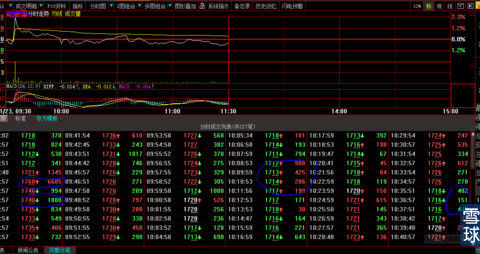
我们再来看看000525红太阳日K线，股价正好接近前期高点。
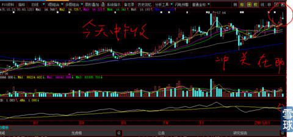
由于做盘人（庄）决心已定，很难有力量改变他的原定计划（无论大盘好坏，他都会按照计划进行），下午虽然在大盘的上攻中有买盘跟进持股，但是没有带头大哥的允许，买单在分时成交均线处，无力抗击压盘，下午，在“带头大哥”刻意做盘引导下，股价终于开始节节下滑，完美的完成日线成交。见下图。
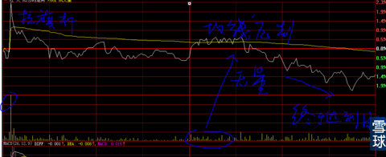
日线图收盘就变成这样了。见下图。
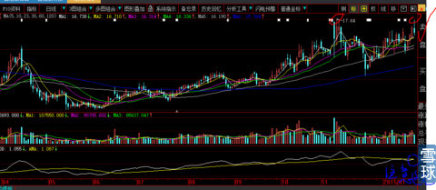
但是，通过000525红太阳周线，可以帮助我们过滤掉“心”的抖动，周线的均线系统已经在开始微微上翘，要能体察到这一只刻“只能意会不可言传”的微小变化。预计下周的周线会变成这样。
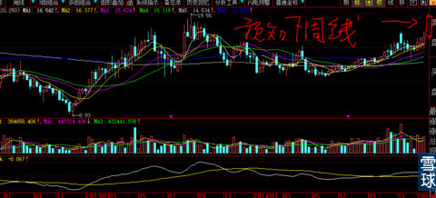
月线现在是这样，但是，下周五，是大资金作图必须完成的作业，000525红太阳的月线就会变成这样。
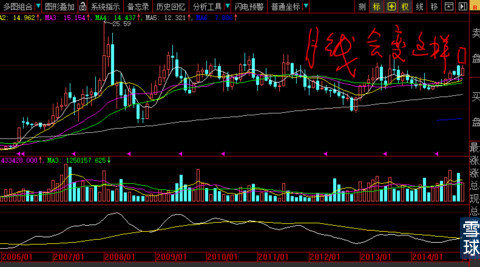
股价在低位的时候，大资金做的是要让你恐惧。这是一种类型。
另外一种类型，就是一旦股价趋势明朗化，大资金的引导方向就会相反，让大众的心理预期不能往下。再举个这种类型的例子。
以下是我对“新黄浦”看盘记录。
见下图，上午还是气势汹汹的打压，突然就有这么多的大单交替成交。有人说：心大，你把新黄浦的底牌反复写过很多帖子，大资金会不会放弃？
你简直就是在讲弱智的笑话，要知道做这种长庄的大资金，前期就必须投入30亿以上真金白银，中途的拉升至少还需要准备20亿短期融资，几年的计划里不知道会遇到多少政治、经济、宏观、微观多少黑天鹅事件，怎么可能因为一个无名小卒写个帖子就放弃？难道下图这些大单，是我忽悠进来的？你知道每笔这样的大单需要多少银子吗？
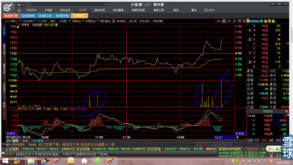
为了达到把做日K线上影线基本填满，使周线固定成“玉树临风”的大阳线，大资金不遗余力，在接下来的20分钟里继续开工，为保证下周的月线收盘能同样“玉树临风”而努力的工作着。
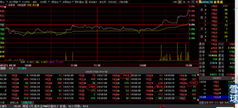
今天收盘日K线就变成这样了。想想上午的下跌时日K线是什么样子？看看昨天的上影线，是不是被今天的日K线填满？
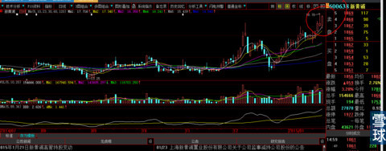
今天收盘的周线还可怕吗？是不是“玉树临风”？
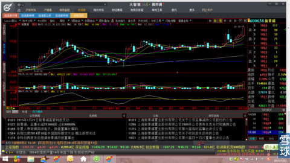
再来看看下图的今天2015年1月23日月线收盘图。是不是上个月的月线下影线部分的所有恐惧一扫而光？新进来的新人和老人谁还记得大资金庄家虐待你们时候的极度恐惧？如果不是“心大”我做你内心坚强后盾，扪心自问，你们有谁会挺到“山花即将烂漫”的今日？
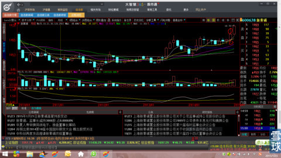
你们忘记了，我可没有忘记那些庄家在盘中故意制造砸盘过山车一般艰难困苦的恐怖日子，虽然前后才2个月不到，就发生了天翻地覆的巨大变化，但是，都是血淋淋割肉盘、黄灿灿的真金白银啊，亲粉们！
看看下图，大盘稍微下跌、股价一启动前就先有巨单砸盘。财富就在这几分钟时间的“恐惧还是希望”中定生死。
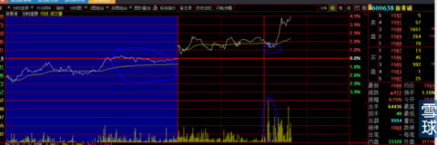
看看下图卖单的威胁。
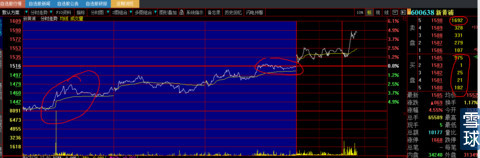
大单反复的对敲，再看看低位庄家等待大户出逃的接单。其实这一切，哪有什么秘密可言？全部都是心理战的需要。
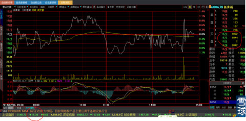
奇怪的是：股价下跌总是有人在低位大单接货。见下图。
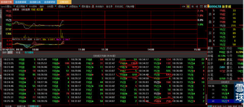
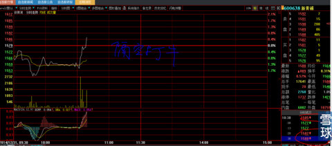
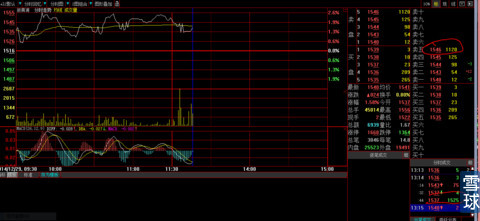
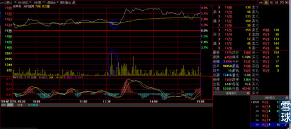
2014年的收盘战，如果扣除大资金自买自卖的对倒盘，盘面是如此之轻。但是有几人能够体会？
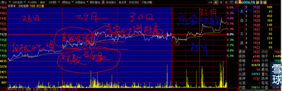
下图是2014年12月31日上午收盘后的截图，因为我知道下午回发生什么，刻意先截下来，以备日后向“亲粉”们显摆一下我不是“事后诸葛亮”，嘿嘿。
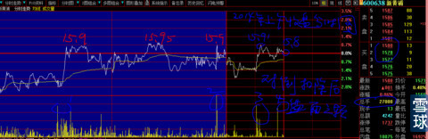
等到下午开盘5分钟后，主力就开始了年关月线收盘画图决的战。看看多日的15.95元，一旦砸盘完成后的拉升，是多么的不堪一击？
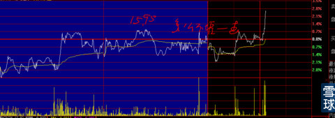
再让你们看看庄家对低位筹码贪婪的吃相。你们有谁像我这样看过盘？就算你看盘，谁有过如此心机？见下图。还在上午交易的盘中，我就节录出下图。
我不富贵天理难容！
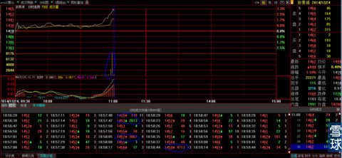
你不要吹牛告诉我说：“我早就知道这一切”。看看下图，再去看看我写的那些帖子，就知道你我的心理素质差距哪里仅仅“一米”？看看当初的日线图，谁敢预料今天的结果？
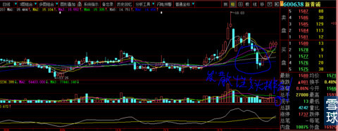
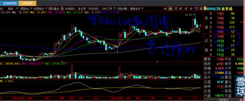
2014年12月25日这一天是星期四，新黄浦的月线图是这样的，见下图。现在事后诸葛亮的人想做假都做不到，呵呵，正因为我知道未来是怎么，就先截图下来，为今天的帖子在做准备了。
看看下图，那么长的上影线，可怕吗？如果死抱教科书静态的看图型，不知道股市的灵魂是动态的，岂不是死的很难看？
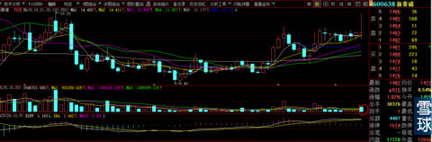
到月底收盘就是这样的了。
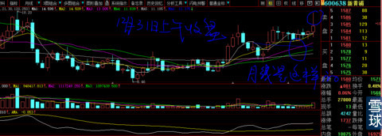
到今天就变成下图这样的了。
在这里，我就敢于大声说：自从中国开股市以来，就没有第二个我这样，手把手教着、带着亲粉们完整走过全部“艰难困苦心路”岁月历程的导师。
是的，我的水平没有“大牛人”们高，这个是肯定的。
但是，自信我的人文情怀、大的格局无人可比，过去没有，现在没有，将来也不会有我这样：从不沉醉在过去的辉煌不能自拔、永远不嫌弃、不抛弃、不放弃、永远带领大家向前看的知心朋友。也没有我这样咬牙切齿、痛心疾首地痛骂毫无利害关系“李瓶儿”类型粉丝们的“心大”。
妮妮雪狐@炒的是心:为什么要把周线月线做成玉树临风的模样呢？是不是怕图形做不好场面无法控制呢？
炒的是心@妮妮雪狐: 均线系统跟不上，不是就成”顶背离“了吗？交易金额不够，均线在既定的时间由于只有价没有量，你用3年级以下算术也能算出来均线的上升速度、角度是如何，能不能顶在日线、周线、月线的屁股上。新黄浦每天大量对倒，就是为了均线快速上来、保持日成交量的均匀，使主力将来波段做差价的时候，让跟庄人对量的变化不大放松警惕。其实，之前的日成交量有虚假，主力只可以放大成交量，但是，即使他一笔都不参与也没有办法缩小成交量，这样，他波段性没有虚假的真实卖出的时候，就不易被人察觉，懂了吧。浙江龙盛为什么要站2周控制涨幅？不管有没有庄，我很早就说过，大牛股前2个周涨幅连续控制在9%—15%以内，后面就大幅扩大周涨幅。去看看《周线级别技术贴》里面有讲。
炒的是心@三浪三浪三: 我的回复才是经典心血，我觉得比帖子牛逼不知道多少倍。因为没有问到，我也想不到要回答这个问题。这些是任何书上都看不到的，无论是赚过多少的亿的牛人写过的多少本书里面，还是就为了写书而事后诸葛亮照本宣科写的书，里面都不会有。不是没有人明明知道而不写，是他们根本想不到底是为什么。知其然不知其所以然。
挟弓负剑有厂公@炒的是心:心大，红太阳今天这个走势应该是起跳之前的下蹲吧？
炒的是心@挟弓负剑有厂公: 我就没有见过起跳前不先杀人的股票。
宇宙自然流@炒的是心:但杀人后未必起跳。
炒的是心@宇宙自然流: 所以我敢说感谢：《老子天生富贵，谁也无法阻挡》。
蛋蛋菌@炒的是心:心大，这XHP庄家好猥琐啊，还拉尾盘。
炒的是心@蛋蛋菌: 就是为了控制收盘价，因为今天是周五，为周线、月线的控制，这是庄股最后时间的必争之地，必战之时，周线收盘后就是历史固定数据，将影响长期均线方向、角度、力度。否则就不叫“庄股”了。那天那个谁？还有谁人敢于跟我叫板：根本没有庄家一说，股价的涨跌都是市场共振引起的？我吃过的盐比你吃过的饭还多。
斑马斑马你在哪@炒的是心:心大,我是初学者，发现您经常说市面上很多炒股书籍是糟粕，那么作为初学者的我，在没有高人系统教导的情况下，怎么才能学有所成？谢谢
炒的是心@斑马斑马你在哪: 自己就是自己唯一最好的老师，没有之一。教材就是历史上所有大牛股的走势。用心去一根K线一根K线结合均线系统，不断的复盘复盘再复盘。其他外力的介入，不可能改变你的命运。这是我对所有人的忠告。不要迷信牛人，哪怕他是巴菲特，因为资金量不一样，他们的盈利模式你不可能复制。这个道理我年轻的时候就悟出来了。